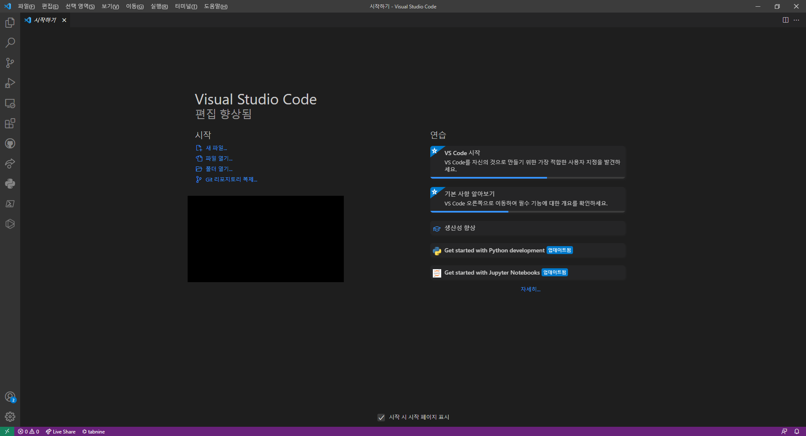
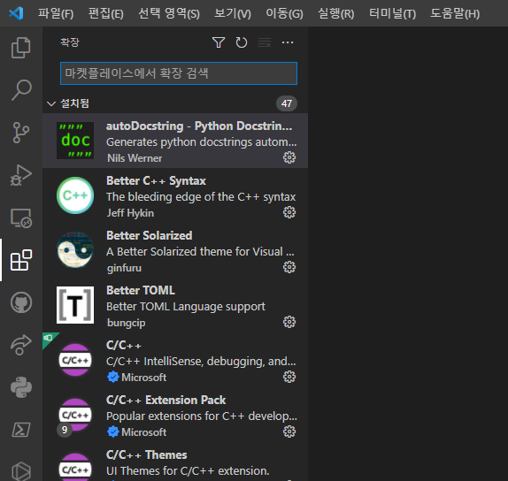

에디터
마크다운은 텍스트 파일입니다. 메모장으로 작성하는 그 텍스트 파일을 말하는 것이 맞습니다. 하지만, 메모장은 하나의 프로젝트를 진행하기에는 기능이 너무 부실합니다. 메모장보다 기능이 많은 다른 텍스트 에디터를 사용하는 것이 좋습니다.
우리에게 쓰기 좋은 텍스트 에디터는, 마크다운 파일의 구조를 한 눈에 알아보기 쉽게 보여주고, 지정한 폴더의 구조를 직관적으로 보여주며, 여러 개의 텍스트 파일을 한 창에 여러 탭으로 열 수 있는 프로그램입니다. 이러한 용도로 좋은 텍스트 에디터로는 Sublime Text, notepad++ 등이 있는데, 현재 가장 많은 사람들에게 사용되고 있는 텍스트 에디터는 Visual Studio Code입니다. 줄여서 VSC라고도 합니다.
앞으로 이 책에서는 VSC를 사용해서 책을 만들 거지만, 다른 텍스트 에디터도 사용이 가능합니다. 추천하진 않지만 메모장도 사용이 가능은 합니다. 결국 같은 텍스트 에디터이고 사용하기만 편리하면 어느 것을 사용해도 상관 없으나, 이 책에서 설명하는 것과 조금 내용이 다를 수 있음은 감안해주시기 바랍니다.
만약 이미 사용하고 있는 텍스트 에디터가 있거나, 이미 VSC가 설치되어 있는 사람들은 Better TOML 확장만 설치하고 이 챕터를 스킵해주세요. 아래에선 VSC를 설치하고 간략하게 사용하는 방법을 정리합니다.
설치
Visual Studio Code 공식 사이트에 들어가 다운로드 버튼을 눌러서 설치하면 끝입니다.
기본 사용 방법
VSC를 처음 실행하면 아래와 같은 창이 나올 겁니다.
색이 조금 다를 수 있고, 왼쪽 사이드바에 버튼이 더 적겠지만 상관 없습니다. 만약 언어를 바꾸고 싶다면 이 글을 참고해서 바꿔주세요.
그러면, 왼쪽 바의 가장 위쪽 종이 2장이 그려진 버튼을 클릭해봅시다.

그러면 폴더를 여는 버튼이 나옵니다. 이 버튼을 클릭해서 나중에 우리의 책이 저장되어 있는 폴더를 열어서 거기서 작업을 할 겁니다.
확장 프로그램 설치
VSC의 가장 큰 장점 중 하나로, 커뮤니티가 매우 크게 활성화되어 있어 유용한 확장 프로그램이 매우 많습니다. 확장 프로그램을 적절히 설치하면 VSC를 한결 편리하게 사용할 수 있습니다.
확장 프로그램은 사이드바의 작은 정사각형 4개가 그려진 버튼을 클릭해서 관리할 수 있습니다. 아래 그림의 왼쪽 사이드바에서 강조된 버튼입니다.
클릭하시면 상단에 마켓플레이스에서 확장 검색이라고 나오면서 확장 프로그램을 검색할 수 있는 창이 나옵니다. 이 창에 다음 확장프로그램을 검색해서 설치해줍시다.
- Better TOML: mdBook에 포함된 toml 파일을 관리하기 편하게 해줍니다.
- Prettier (선택): 작성한 마크다운 파일을 보기 좋게 정리해줍니다.
- Markdown All in One (선택): 마크다운 파일을 작성할 때 편리한 기능을 제공해줍니다만, mdBook 작성시엔 별 상관이 없습니다.
- GlassIt-VSC (선택): VSC 화면을 반투명하게 해줍니다. 모니터가 하나밖에 없거나 모니터가 작을 때, VSC 화면 뒤편으로 작성하고 있는 책을 실시간으로 볼 수 있게 해줍니다.
Prettier 사용 설정
VSC에서 Ctrl+Shift+P를 누르고 '설정'을 검색하면 기본 설정: 설정 열기(UI) 항목이 있을 겁니다. 그 항목을 방향키와 엔터로 선택하면 창이 하나 열립니다. 상단에 있는 검색창에 아래 두 개를 검색해서 다음과 같이 설정해주세요.
- format on save 검색 -> Format on save 체크
- default formatter 검색 -> Default Formatter를 None에서 Prettier로 변경
이로써 파일이 저장될 때마다 파일이 깔끔하게 정리되며, 이는 Prettier 확장 프로그램을 사용해서 이루어집니다.
기타 사용방법
저희는 후에 직접 책을 만들어보면서 필요한 기능을 자연스럽게 배울 거지만, 프로그램 사용법을 더 깊이 알고 싶으시다면 인터넷에 튜토리얼이 널려 있으므로 구글링하시면 됩니다. 'visual studio code 사용법'을 검색하면 튜토리얼이 쏟아져 나옵니다. 그래도 잘 모르시겠다면 이 글을 보시면 됩니다.
이로써 여러분의 첫 마크다운 책을 만들기 위한 준비가 완료되었습니다! 다음 장에서부터 저희만의 책을 직접 만들어보면서 mdBook을 사용하는 방법을 익혀봅시다.